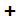
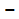
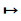
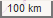

Permite seleccionar y activar los mapas de referencia, mapas temáticos y la capa de edición.
Ofrece información sobre los controles.
 Permite ampliar el mapa.
 Permite reducir el mapa.
Permite acceder a pantalla completa.
 Permite medir distancias en el mapa.
Permite dibujar líneas en el mapa que se guardan en la capa de edición.
Permite dibujar polígonos en el mapa que se guardan en la capa de edición.
Permite añadir marcadores en el mapa que se guardan en la capa de edición.
Permite modificar las entidades añadidas al mapa.
Permite eliminar las entidades añadidas al mapa.
Permite minimizar el mapa de localización.
 Muestra la escala del mapa.